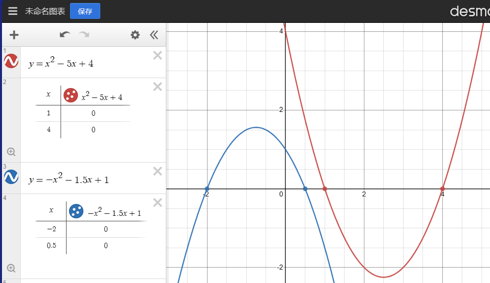
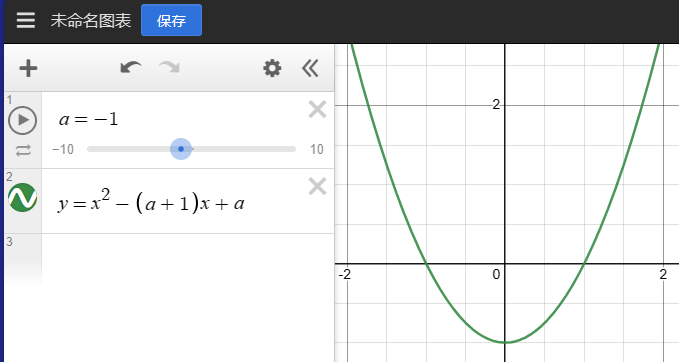
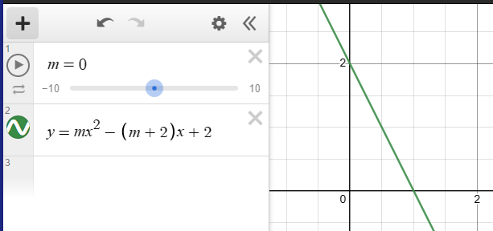
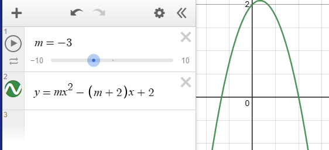
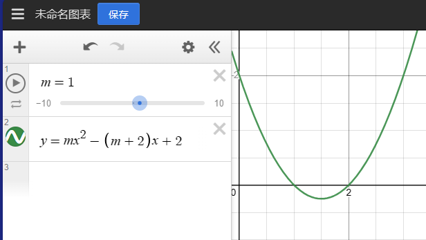
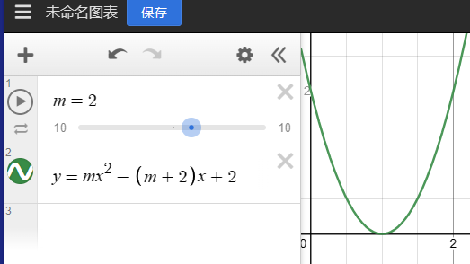
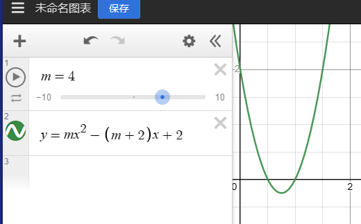
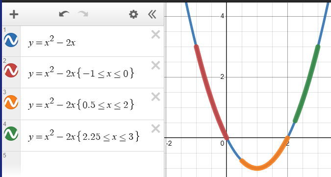
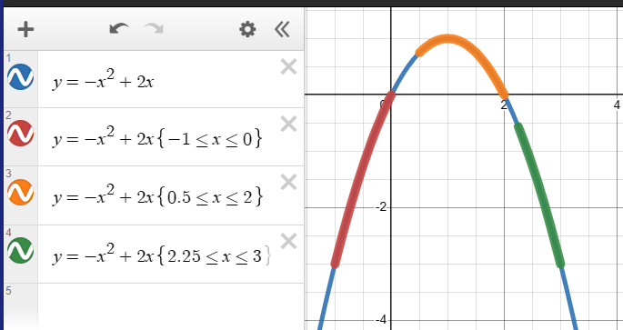

本文含有较多图片，单击可以放大。
1、基础：一元二次不等式的基本解法
一元二次不等式的左边是一个一元二次函数，中间是一个不等号，右边一般为 $0$。如果不是，则考虑移项。
例题：$(x+5)(3-2x)\ge6$。
首先，将左边去括号，得到 $-2x^2-7x+15$。
然后，移项，得到 $-2x^2-7x+9\ge0$。
然后，将不等式的左边部分进行因式分解，得到 $(-2x-9)(x-1)\ge0$。
根据初中时期的知识，我们可以知道当 $x=-\frac{9}{2}$ 或 $x=1$ 时，式子等于 $0$。而 $(-2x-9)(x-1)$ 应该是开口向下的一元二次函数。因此，我们可以得到 $-\frac{9}{2}\le x\le1$。
因此，我们可以得到如下的基本步骤：
- 将整个不等式尝试化成左边一个一元二次函数、右边一个 $0$ 的形式，其中的一元二次函数应使用因式分解，化成 $(ax+b)(cx+d)$ 的形式。因式分解的难度随出题老师的变态程度的提升而提升。并且因式分解中还可能包含更多字母，这就需要经验了。
- 计算当 $x=?$ 时，一元二次函数的值为 $0$。这个 $x$ 我们一般称之为零点。零点不是点，而是一个数，当自变量 $x$ 的值为这个数时，函数值为 $0$。
- 判断函数的开口方向。当开口方向向上且不等号为小于（等于）时，或者开口方向向下且不等号为大于（等于）时，不等式的解集在两个零点之间（需要考虑能否取等号）。否则，不等式的解集在两个零点的两边。
如下图：

被加粗的点即为函数取值为 $0$ 的点。
2、分类讨论
当 $a\in R$ 时，求 $x^2-(a+1)x+a<0$ 的解集。
首先，凭经验进行因式分解，我们可以发现 $x^2-(a+1)x+a=(x-a)(x-1)$。这样，我们就可以很容易地求出函数零点为 $a$ 和 $1$，不等式解集应该在零点之间，且不能取等号。
那么，我们就可以根据 $a$ 和 $1$ 的大小关系分类讨论了。
当 $a<1$ 时，$a<x<1$。

当 $a=1$ 时，可以发现原不等式无解。
当 $a>1$ 时，可以发现 $1<x<a$。
有些时候，丧心病狂的出题人会搞点花活。比如说，把字母放在二次项前面。在做这类题目时，一定要注意一元二次不等式会不会退化成一元一次不等式，并分类讨论。
比如，求 $mx^2-(m+2)x+2\le0$ 的解集。
根据因式分解可以得到，原不等式等价于 $(mx-2)(x-1)\le0$。
但是，我们可以发现，当 $m=0$ 时，原不等式会退化成一元一次不等式，得 $-2x+2\le0$。这个一元一次不等式倒也不难，可以解得 $x\ge1$。

当 $m\neq0$ 时，可以发现函数的零点是 $1$ 和 $\frac{2}{m}$。
但是，$m$ 的变化还会影响到函数的形状是开口向上还是向下。因此，需要更复杂的分类讨论。
当 $m<0$ 时，当然有 $\frac{2}{m}<1$。此时函数开口向下，那么解集就是零点的两边，也就是 $x\le\frac{2}{m}$ 或 $x\ge1$。

当 $0 < m < 2$ 时，还有 $\frac{2}{m}>1$。此时函数开口向上，那么解集就是零点之间，也就是 $1\le x\le\frac{2}{m}$。

当 $m=2$ 时，$\frac{2}{m}=1$。由于原不等式允许取等号，所以 $x=1$。

当 $m>2$ 时，$\frac{2}{m}<1$。此时解集为 $\frac{2}{m}\le x\le1$。

一个看似简单的不等式，分了 5 类作答……在数学中养成细心审题、全面考虑的习惯还是很重要的。
3、一元一次不等式与一元二次不等式的分类讨论结合
若关于 $x$ 的不等式 $ax-b\le0$ 的解集为 {$x|x\ge2$}，则关于 $x$ 的不等式 $ax^2+(3a-b)x-3b<0$ 的解集是？
根据这个一元一次不等式的解集，我们可以发现，$ax-b$ 的值随 $x$ 的升高而降低。换句话说，$a<0$。
因此，可以解得 $x\ge\frac{b}{a}$。
这样我们就可以发现 $\frac{b}{a}=2,a<0,b<0$。
再看看这个一元二次不等式，可以发现 $ax^2+(3a-b)x-3b=(ax-b)(x+3)$，也就是函数的零点在 $-3$ 和 $\frac{b}{a}=2$ 上。
因为 $a<0$，我们可以发现一元二次函数开口向下，最终解得 $x<-3$ 或 $x>2$。
4、分数与不等式，如何转化为一元二次不等式
一个要点：当 $a$ 和 $b$ 都为实数且 $b\neq0$ 时，$\frac{a}{b}>0$ 等价于 $ab>0$，将不等号换成大于、大于等于、小于、小于等于都成立。证明如下：
我们都知道，一个实数的平方一定是一个非负数。而 $b\neq0$，这也意味着 $b^2>0$。
如果不等式左右两边同时乘 $b^2$，由于 $b^2>0$，所以不等号无需改变。而 $0$ 乘任何数都得 $0$，原不等式就被化成了 $ab>0$。证毕。
5、$\Delta$ 的出场
有些时候，一元二次不等式问题需要用到初中时学习到的“根的判别式 $\Delta$”。
若 $-x^2+mx-1\ge0$ 有解，则实数 $m$ 的取值范围？
首先，不等号左边的一元二次函数开口向下。
然后，不等式要求函数存在 $x$ 轴的上方（或恰好在 $x$ 轴上）的部分。
因此，可以得知 $-x^2+mx-1=0$ 应该有解，两个实数解可以相同。换言之，$\Delta=m^2-4\times(-1)\times(-1)\ge0$，再根据一元二次方程的解法解出来即可。
再看看这个。若 $x^2+ax+4<0$ 解集为空，则 $a$ 的取值范围？
首先，不等号左边的一元二次函数，开口向上。
然后，没有部分在 $x$ 轴的下方。换句话说，$x^2+ax+4\ge0$ 对所有实数 $x$ 成立。
那么，一元二次方程 $x^2+ax+4=0$ 应该无实数解或两个实数解相同。即，$\Delta=a^2-4\times1\times4\le0$。再根据一元二次方程的解法解出来即可。
6、一元二次函数与它的最值
已知关于 $x$ 的不等式 $-x^2+4x\ge a^2-3a$ 在 $R$ 上有解，则 $a$ 的取值范围是？
首先，可以发现 $-x^2+4x$ 的最大值为 $4$，这应该不难求出。
若 $a>b$ 恒成立，则 $a$ 的值必须大于 $b$ 可能达到的最大值。若 $a<b$ 恒成立，则 $a$ 的值必须小于 $b$ 可能达到的最小值。
若 $a\ge b$ 恒成立，则 $a$ 的值必须大于等于 $b$ 可能达到的最大值。若 $a\le b$ 恒成立，则 $a$ 的值必须小于等于 $b$ 可能达到的最小值。
然后，我们可以把 $a^2-3a$ 想象成一条横在图像上的横线 $y=a^2-3a$，需要注意这里 $y$ 不随 $x$ 的变化而变化（而是随 $a$ 的变化而变化），所以是横线。

那么，当 $a^2-3a>4$ 时，不等式左边 $-x^2+4x$ 的最大值都达不到这个线。而当 $a^2-3a\le4$ 时，$-x^2+4x$ 就能有解了。
因此 $-1\le a\le4$。
7、一元二次不等式恒成立的问题
有些时候，题目会要求无论 $x$ 取任意实数，不等式均成立，要求求出另一个未知的字母的取值范围。
这种题目一般与 $\Delta$ 有所关联。
这里列出个表格，表示各种情况下恒成立的要求。
| 函数开口方向 | 无论 $x$ 取何值，函数的值都要求 | 函数与 $x$ 轴的交点个数 | $\Delta$ 的要求 |
|---|---|---|---|
| 向上 | 小于 $0$ | 不可能实现 | |
| 小于等于 $0$ | |||
| 大于 $0$ | $0$ 个 | 小于 $0$ | |
| 大于等于 $0$ | $0\sim1$ 个 | 小于等于 $0$ | |
| 向下 | 小于 $0$ | $0$ 个 | 小于 $0$ |
| 小于等于 $0$ | $0\sim1$ 个 | 小于等于 $0$ | |
| 大于 $0$ | 不可能实现 | ||
| 大于等于 $0$ | |||
当然，上面要求的分类讨论，这里也不能少。
若不等式 $(a-3)x^2+2(a-2)x-4<0$ 对于一切 $x\in R$ 恒成立，则 $a$ 的取值范围？
首先，先考虑当 $a-3=0$，一元二次函数退化成一元一次函数的情况。此时函数还是一元一次函数而不是连未知数 $x$ 都被消去的形式，而 $2x-4<0$ 并不恒成立。
当 $a-3>0$ 时，由上表可以发现这是不可能实现恒成立的。
当 $a-3<0,a<3$ 时，$\Delta<0$，也就是说 $[2(a-2)]^2-4\times(a-3)\times(-4)<0$，用一元二次不等式的解法可知 $-2\sqrt2<a<2\sqrt2$。
综上，$-2\sqrt2<a<2\sqrt2$。
再看看这个：$\frac{2x^2+2mx+m}{4x^2+6x+3}<1$ 对所有实数 $x$ 恒成立，则实数 $m$ 的取值范围是？
首先，因为 $6^2-4\times4\times3=-12<0$，可以知道 $4x^2+6x+3$ 始终大于 $0$。因此，可以放心地将分母移项到右边，再稍微整理一下，得 $0<2x^2+(6-2m)x+(3-m)$。
结合上表，可知 $\Delta=(6-2m)^2-4\times2\times(3-m)=4m^2-24m+36-24+8m=4m^2-16m+12=4(m-1)(m-3)<0$，解得 $1<m<3$。
8、在限定 $x$ 的取值范围的前提下，一元二次函数的最值
我们都知道，当 $x$ 的取值范围不限定时，一元二次函数要么只有最大值，要么只有最小值。但是限定了 $x$ 的取值范围后，一元二次函数就有可能同时拥有最小值和最大值了。
| 函数开口方向 | 取值范围相对于对称轴 | 最大值位置 | 最小值位置 | 例图 |
|---|---|---|---|---|
| 向上 | 取值范围整体在对称轴左边 | 取值范围左端点 | 取值范围右端点 |  |
| 取值范围包含对称轴 | 离对称轴最远的地方 | 对称轴处 | ||
| 取值范围整体在对称轴右边 | 取值范围右端点 | 取值范围左端点 | ||
| 向下 | 取值范围整体在对称轴左边 | 取值范围右端点 | 取值范围左端点 |  |
| 取值范围包含对称轴 | 对称轴处 | 离对称轴最远的地方 | ||
| 取值范围整体在对称轴右边 | 取值范围左端点 | 取值范围右端点 |
如果函数上某个点离最值点的水平距离（$|x_0-x_1|$）越大，那么垂直距离（$|y_0-y_1|$）也越大。
例题：$-1\le x\le2$ 时，$x^2-2x+a<0$ 恒成立的必要不充分条件是？
A. $a<-3$
B. $a<-4$
C. $a<0$
D. $a>0$
首先，原不等式等价于 $x^2-2x<-a$。
$x^2-2x$ 的对称轴是 $x=1$，最小值是 $-1$，最大值是当 $x=-1$ 时的 $3$。
若 $a>b$ 恒成立，则 $a$ 的值必须大于 $b$ 可能达到的最大值。若 $a<b$ 恒成立，则 $a$ 的值必须小于 $b$ 可能达到的最小值。
若 $a\ge b$ 恒成立，则 $a$ 的值必须大于等于 $b$ 可能达到的最大值。若 $a\le b$ 恒成立，则 $a$ 的值必须小于等于 $b$ 可能达到的最小值。
因此，$-a>3,a<-3$。
但题目中要求的是必要不充分条件。关于这个，可以参考这里。
综上，此题选 $B$。
9、尝试将其它字母分离出来
恰好做了道比较有趣的题，记录一下。
若 $mx^2-mx-6+m<0$ 在 $1\le m\le3$ 时均成立，则实数 $x$ 的取值范围？
需要注意的是，这次是已知 $m$ 求 $x$ 的范围，而不是已知 $x$ 求 $m$ 的范围。
首先，$mx^2-mx-6+m=m(x^2-x+1)-6$，原不等式等价于 $m(x^2-x+1)<6$。
然后，$1\le m$ 说明 $m$ 是正数，那我们就可以放心地将 $m$ 移到右边而不用变不等号，得 $x^2-x+1<\frac{6}{m}$。
可以发现，$\frac{6}{m}$ 应取最小值（为什么？），即 $m=3$
由此，我们就得到了 $x^2-x+1<0$，花点时间解一下，得 $\frac{1-\sqrt{5}}{2}<x<\frac{1+\sqrt{5}}{2}$。